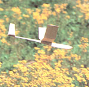
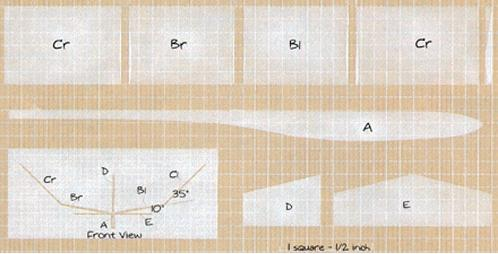

Super Glider
Here's a way to prove the movement of invisible waves of air and have a good time to boot!
By the Mother Earth News editors
July/August 1985
Bob Kornegay, who's in charge of
Mother's Self-Reliant Homestead project, designed this aircraft years ago when he was a youngster competing in glider contests.
It's a high-performance glider capable of traveling several hundred yards under the right conditions. It can provide you with hours of fun, as well as insights into the way air currents move, and you can build it for just a few dollars.
Construction
Follow the dimensions shown on the grid very closely; this project requires precise work if the aircraft is to fly well. Even a few degrees of deviation in the position of the vertical stabilizer, for example, will send it into a spiral. The construction sequence is as follows:
- Saw a wooden yardstick in half and cut one of the halves to match the body profile shown. The size of the nose may have to be adjusted after you test-fly the glider.
- Fashion the wing from a 3/16-by-3-by-18-inch piece of balsa wood from a hobby store. Carefully match the cross-sectional drawing for the Clark-Y airfoil, using a file, rough sandpaper, a spokeshave, or a belt sander to achieve the profile.
- Cut the wing into four equal sections, and miter the cuts (by gently rubbing them on a sanding block) so they form a 13-degree angle (6.5 degrees on each piece).
- Glue (with model airplane cement) two wing sections together, propping up the tips half an inch each to form an angle of about 13 degrees. Apply a couple of thin coats of glue to each piece, so it soaks in, and let the sections stand alone for about a minute before sticking them to gether. After the glue has set for a few hours, carefully add a couple of additional layers to the inside angle to reinforce it, and fill any gaps on the outside angle. Be gentle-the fresh glue partially dissolves the old.
- Using the same procedure, add the other two wing sections.
- Cut the horizontal and vertical stabilizers from 3/32-by-2-inch balsa and shape them with sandpaper. Then trim the bottom of the vertical piece to match the upper surface of the horizontal one, and glue it in place, making sure that it's perfectly centered, aligned, and vertical. (If you leave about 1/16 inch hanging over the back of the horizontal stabilizer, it will help you make adjustments.) Reinforce the joint with added layers of glue once the initial set has taken place.
- Install the tail and then the wing. Be very careful - make sure that they're perpen dicular to the fuselage and perfectly aligned. (It may help to sand a small, flat area on the underside of the wing to mate it to the fuselage.) When the joints have set, reinforce them with more layers of glue.
- Glue the finger guard to the underside of the wing and the fuselage. This prevents your finger from tearing up the trailing edge of the wing when you launch the glider, and it should be on the right side for right-handers and on the left side for southpaws (such as Bob).
It's probably best to leave the wood unfinished, because any liquid applied to the balsa tends to warp it, and even a small tweak will ruin the glider's flight characteristics. You can seal the wood with a mixture of baby powder and sanding sealer, however.
Launch It
To fly your glider, you need a large open area with nothing for the glider to run into. (Small trees are particularly hard on the wing's leading edge.) Winds should be blowing at less than 8 mph.
First make sure that you've got the fore and aft balance right by launching the glider very gently. If it tends to nose up and descend repeatedly, you need more nose weight and should add a little clay. If it plunges to the ground, sand some material off the pod.
It's going to take time and practice to get the most from your glider. The trick is to get the glider up in the air just before a strong puff of wind arrives.
Aim the glider about 10 degrees away from the approaching puff, and tilt the wing closest to you up slightly. The aircraft needs to get some altitude before the wind picks up; then it can twist around and ride the breeze.

MOTHER EARTH NEWS STAFF
This little homemade aircraft is easy to make and good for hours of fun!
|

MOTHER EARTH NEWS STAFF
Diagram of the glider's various sections and construction.
|
|